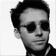

Celtic Lyrics Corner > Artists & Groups > Mouth Music
|  | Mouth Music |
| Members : | Martin Furey, Kaela Rowan & Martin Swan |
| Albums : |
1991 -
Mouth Music
1992 - Blue Door Green Sea 1993 - Mo-Di 1995 - Shorelife 2001 - Seafaring Man |